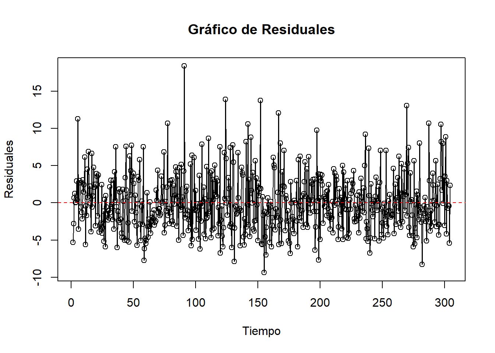

5 Método Box-Jenkins Modelo ARIMA
En el mundo del análisis de series de tiempo, el descubrimiento y la comprensión de patrones temporales son cruciales para tomar decisiones informadas, una de las técnicas más poderosas en este campo es la metodología ARIMA (Autoregressive Integrated Moving Average).
5.1 ¿Por qué ARIMA para datos estacionales?
Cuando trabajamos con series de tiempo, es probable encontrar datos que permiten observar patrones recurrentes en momentos del año, del mes o incluso del día; estos patrones estacionales pueden deberse a factores como estacionalidad o tendencias de comportamiento humano estacionales.
Para modelar y predecir de manera efectiva en tales casos, esta metodología es capaz de capturar estos patrones de estacionalidad.
Se calculó el Augmented Dickey-Fuller Test a la serie de tiempo con la suavización exponencial aplicando metodología Holter Winter, en la cual se evidenvia que el p-valor es tan bajo como 0.01, confirmamos entonces que la serie de tiempo ya se encuentra en un estado estacionario, resultado fundamental para aplicar con precisión modelos de series de tiempo como ARIMA.
adf.test(diff(serie_tiempof))## Augmented Dickey-Fuller Test
## alternative: stationary
##
## Type 1: no drift no trend
## lag ADF p.value
## [1,] 0 -40.4 0.01
## [2,] 1 -30.0 0.01
## [3,] 2 -23.1 0.01
## [4,] 3 -20.4 0.01
## [5,] 4 -19.9 0.01
## [6,] 5 -18.7 0.01
## Type 2: with drift no trend
## lag ADF p.value
## [1,] 0 -40.4 0.01
## [2,] 1 -29.9 0.01
## [3,] 2 -23.1 0.01
## [4,] 3 -20.3 0.01
## [5,] 4 -19.9 0.01
## [6,] 5 -18.6 0.01
## Type 3: with drift and trend
## lag ADF p.value
## [1,] 0 -40.3 0.01
## [2,] 1 -29.9 0.01
## [3,] 2 -23.1 0.01
## [4,] 3 -20.3 0.01
## [5,] 4 -19.9 0.01
## [6,] 5 -18.6 0.01
## ----
## Note: in fact, p.value = 0.01 means p.value <= 0.01Como se mencionó anteriormente según la prueba DFT, la series es estacionaria y se procede a determinar los parámetros ARIMA
modeloARIMA<-auto.arima(diff(serie_tiempof), seasonal = FALSE)
summary(modeloARIMA) ## Series: diff(serie_tiempof)
## ARIMA(0,0,2) with zero mean
##
## Coefficients:
## ma1 ma2
## -0.8557 -0.0629
## s.e. 0.0411 0.0443
##
## sigma^2 = 14.81: log likelihood = -1679.15
## AIC=3364.3 AICc=3364.34 BIC=3377.52
##
## Training set error measures:
## ME RMSE MAE MPE MAPE MASE ACF1
## Training set 0.1179509 3.84158 2.968828 NaN Inf 0.5075278 -0.001918074Se procede a ajustar un modelo ARIMA a una serie de tiempo y se define el order del párametro c(p,d,q), Orden de Diferenciación (d) (ya es estacionaria, d=0), Orden de Autoregresión (p y q= valor seleccionado basándose en el último rezago significativo).
modelo_ARIMA <- arima(diff(serie_tiempof), order = c(0,0,2))
n_predicciones <- 10
modpredicciones <- predict(modelo_ARIMA, n.ahead = n_predicciones)5.2 Predicción Modelo ARIMA
Luego de definido el modelo ARIMA para realizar predicciones, el siguiente paso es visualizar y evaluar la continuidad de las predicciones en relación con los datos reales, la visualización es una parte esencial del proceso de modelado de series de tiempo, ya que nos permite comprender si el modelo está capturando adecuadamente los patrones en los datos y si las predicciones son coherentes con el comportamiento histórico de la serie.
plot(diff(serie_tiempof) , main = "Serie Temporal predicción")
lines(modpredicciones$pred, col = "red", lty = 4) # Línea de predicción
legend("topright", legend = "Predicción", col = "red", lty = 4)Realizamos un zoom a la predicción y comparamos con otro periodo para obervar similitud.
inicio_zoom <- 300
fin_zoom <- 305
plot(diff(serie_tiempof), main = "Zoom Serie Temporal predicción", xlim = c(inicio_zoom, fin_zoom))
lines(modpredicciones$pred[inicio_zoom:fin_zoom], col = "red", lty = 4)
legend("topright", legend = "Predicción", col = "red", lty = 4)
inicio_zoom <- 292
fin_zoom <- 299
plot(diff(serie_tiempof), main = "Zoom Serie Temporal sin predicción", xlim = c(inicio_zoom, fin_zoom))
lines(modpredicciones$pred[inicio_zoom:fin_zoom], col = "red", lty = 4)
legend("topright", legend = "Predicción", col = "red", lty = 4)
Observamos similitud entre el rango de los datos y el pronóstico.
5.3 Comparativo Serie de Tiempo suavizada - Modelo ARIMA
plot(diff(serie_tiempof), main = "Serie Tiempo suavizada Winter Holters vs. Modelo ARIMA")
lines(fitted(modelo_ARIMA), col = "green", lwd = 0.5)Se enfatiza que la serie es estacionaria y se menciona que el modelo parece adaptarse adecuadamente a la serie sin tendencia evidente, mientras se reconoce que aún no se han definido medidas de desempeño específicas.
5.4 Comprobaciones Modelo ARIMA
Procedemos a realizar 3 comprobaciones del modelo ARIMA, evaluando la válidez del modelo y la calidad de las predicciones.
Distribución de los errores: Los modelos ARIMA asumen que los residuales siguen una distribución normal, si los residuales no siguen una distribución normal, esto puede afectar la precisión de las estimaciones de parámetros y las pruebas de significancia. También puede influir en la confiabilidad de las predicciones y en la interpretación de los resultados.
Independencia de los Residuales: La independencia de los residuales es esencial, si los residuales están correlacionados en el tiempo, indica que el modelo no ha capturado completamente la estructura temporal de los datos; llevando a inferencias erróneas y predicciones inexactas.
Homocedasticidad de los Residuales: La homocedasticidad significa que la varianza de los residuales es constante a lo largo del tiempo, esto es importante porque garantiza que los errores tengan la misma “dispersión” en toda la serie temporal. Cuando los residuales son heterocedásticos , las predicciones pueden ser inexactas debido a la variabilidad no constante de los errores.
Estas pruebas ayudan a verificar si se cumplen las suposiciones fundamentales del modelo y, si no se cumplen, pueden indicar la necesidad de ajustar el modelo, transformar los datos o considerar enfoques alternativos para mejorar la calidad de las predicciones y análisis de series temporales.
Procedemos a determinar los residuales del modelo ARIMA y determinar la hipotesis que permite evaluar la estacionariedad de la serie
5.4.1 Normalidad ARIMA
residuales<-modelo_ARIMA$residuals
qqnorm(residuales)
qqline(residuales)
resultado <- ks.test(residuales, "pnorm", mean(residuales), sd(residuales))
print(resultado)##
## Asymptotic one-sample Kolmogorov-Smirnov test
##
## data: residuales
## D = 0.068088, p-value = 0.00719
## alternative hypothesis: two-sidedEn este caso, 0,00719 significa que el valor p es extremadamente cercano a cero, un valor p tan pequeño indica una evidencia estadística muy sólida para rechazar la hipótesis nula; esto indicaría que la serie de tiempo es muy probablemente estacionaria en lugar de no estacionaria.
5.4.2 Independencia
Calcular y verificar la independencia de los datos es esencial al trabajar con modelos ARIMA para garantizar que se cumplan las suposiciones fundamentales del modelo, esto contribuye a la precisión de las predicciones, la interpretación de los resultados y la confiabilidad del análisis de series temporales en general.
HO: Los residuales son independientes
H1: Los residuales son dependientes
shapiro.test(residuales)##
## Shapiro-Wilk normality test
##
## data: residuales
## W = 0.96943, p-value = 6.196e-10Dado que el valor p (p-value) es extremadamente bajo (6.196e-10), mucho menor que un nivel de significancia típico como 0.05, se rechaza la hipótesis nula (H0), los residuales son dependientes,
Procedemos a definir el tercer criterio de Homocedasticidad
5.4.3 Homocedastidad
# Obtén los residuales del modelo ARIMA (reemplaza 'modelo_arima' con tu propio modelo)
residuales <- residuals(modelo_ARIMA)
# Crea un gráfico de dispersión de residuales vs. tiempo
plot(residuales, type = 'o', ylab = 'Residuales', xlab = 'Tiempo', main = 'Gráfico de Residuales')
abline(h = 0, col = 'red', lty = 2) # Línea horizontal en y = 0
Mediante el método de gráfico de dispersión de los residuales al parecer existe Homocedasticidad, puesto que los puntos están dispersos aleatoriamente alrededor de una línea horizontal en el gráfico.